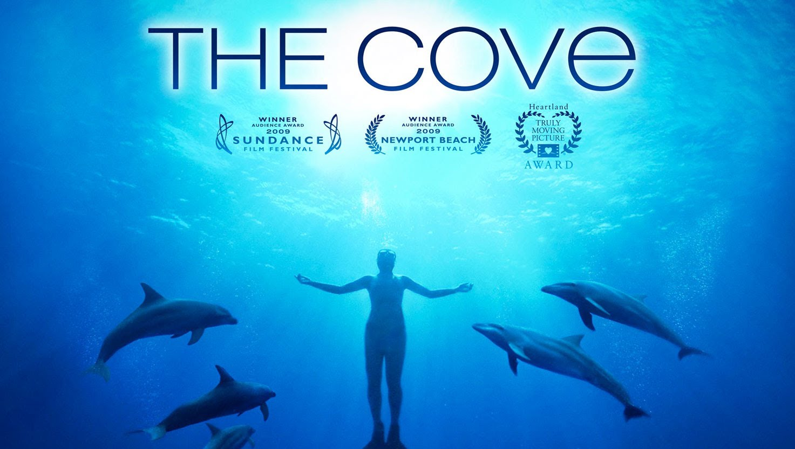
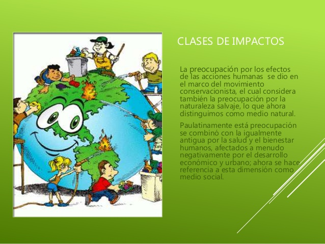

IMPACTO AMBIENTAL DE LA ACTIVIDAD HUMANA EN EL MEDIO AMBIENTE
Cuando hablamos del siglo XXI, se debe tener en cuenta que en este momento histórico se han producido importantes y numerosos cambios en la esfera económica, tecnológica, social, industrial, de la cultura y del medio ambiente. Cuyo rasgo más destacado es el avance significativo de la ciencia y de las tecnologías.
Estos cambios han afectado a todos los ámbitos de la vida humana y su seguridad. Según el Programa de las Naciones Unidas para el Desarrollo (PNUD, 1994), la seguridad humana se compone de siete dimensiones o valores a proteger: la seguridad económica, la alimentaria, la sanitaria, la medioambiental, la personal, la comunitaria y la política.
Actualmente, esta seguridad está ligada al concepto de riesgo y su importancia se entiende en la gestión de crisis complejas, la consolidación de la paz y la necesidad de hacer frente a nuevas amenazas como el cambio climático y la degradación ambiental.
Los recursos de la biosfera son limitados y la problemática medioambiental derivada de su disminución requiere una respuesta urgente en el escenario internacional. La degradación ambiental con el descenso de la cantidad, así como de la calidad de los recursos naturales y su desigual reparto, junto con el incremento de la escasez ambiental, tiene impactos sociales que ya están generando conflictos entre los estados, siendo fuente de los mismos.
Los conflictos sociales, incluyendo las guerras como sus expresiones más violentas, están aumentando como consecuencia del cambio climático; motivados por el acceso a los recursos naturales como los bosques, las pesquerías, las tierras agrícolas y el agua, que ya es un elemento clave en muchas de las guerras.
Un ejemplo del impacto de la actividad humana sobre el medio ambiente lo encontramos en el documental ”The Cove”, que denuncia la matanza de delfines en Japón:

Ante las consecuencias del cambio climático y para evitar responder a las mismas con medidas de crisis, se necesitarán unas políticas medioambientales adaptadas de forma gradual. Una de las esferas claves de prevención y adaptación de las sociedades al cambio climático es la gobernabilidad, entendida como: “la capacidad de una sociedad de definir y establecer políticas y resolver sus conflictos de manera pacífica dentro de un orden jurídico vigente” (PNUD).
La gobernabilidad alude no solo a la dimensión política sino también a la económica, social y medioambiental. Así como, a la gestión adecuada de los recursos naturales y el medioambiente, facilitando la cooperación entre países para favorecer temas de prevención de conflicto.
En la gestión de las fuerzas tecnológicas, económicas, climáticas y normativas se hallará la respuesta a las amenazas de los conflictos en el futuro. Así como, en dar respuesta a este nuevo repertorio de amenazas con un nuevo repertorio de acciones como: la promoción de políticas ecológicas, energías alternativas y renovables y tecnologías sostenibles.
